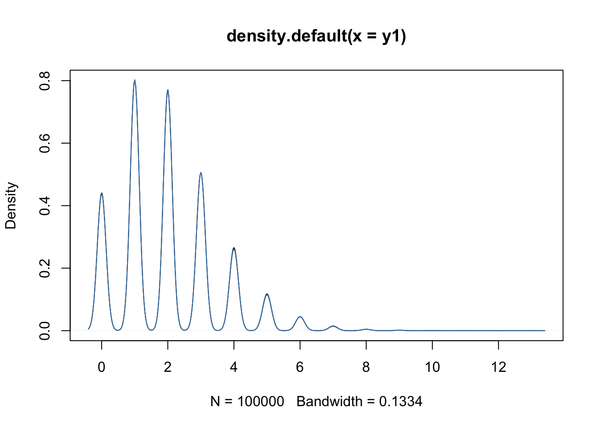

Sequencing: RNA-seq data intro
Koen Van den Berge
8/6/2021
## Installing package into '/Users/runner/work/_temp/Library'
## (as 'lib' is unspecified)##
## The downloaded binary packages are in
## /var/folders/24/8k48jl6d249_n_qfxwsl6xvm0000gn/T//Rtmp6Wjp8k/downloaded_packages## 'getOption("repos")' replaces Bioconductor standard repositories, see
## '?repositories' for details
##
## replacement repositories:
## CRAN: https://cloud.r-project.org## Bioconductor version 3.12 (BiocManager 1.30.16), R 4.0.5 (2021-03-31)## Installing package(s) 'BiocVersion', 'limma'##
## The downloaded binary packages are in
## /var/folders/24/8k48jl6d249_n_qfxwsl6xvm0000gn/T//Rtmp6Wjp8k/downloaded_packages## Old packages: 'boot', 'class', 'cluster', 'KernSmooth', 'lattice', 'MASS',
## 'Matrix', 'mgcv', 'nnet', 'spatial', 'survival'## 'getOption("repos")' replaces Bioconductor standard repositories, see
## '?repositories' for details
##
## replacement repositories:
## CRAN: https://cloud.r-project.org## Bioconductor version 3.12 (BiocManager 1.30.16), R 4.0.5 (2021-03-31)## Installing package(s) 'edgeR'## also installing the dependencies 'locfit', 'Rcpp'##
## The downloaded binary packages are in
## /var/folders/24/8k48jl6d249_n_qfxwsl6xvm0000gn/T//Rtmp6Wjp8k/downloaded_packages## Old packages: 'boot', 'class', 'cluster', 'KernSmooth', 'lattice', 'MASS',
## 'Matrix', 'mgcv', 'nnet', 'spatial', 'survival'In this lecture we will start working with a real bulk RNA-seq dataset from Haglund et al. (2012). After importing the data, we will be working our way through four major challenges which, together, will form a full RNA-seq differential expression (DE) analysis pipeline where the result of our analysis will be a(n ordered) list of genes that we find to be differently expressed between our conditions of interest. The four main challenges we will look into are
- Choice of modeling assumptions (distribution).
- Normalization.
- Parameter estimation under a limited information setting.
- Statistical inference under high dimensionality (many genes).
1 Experimental design, data import and data exploration
1.1 Experimental design
Let’s try to work out the experimental design using the following paragraph from the Methods section of the paper.

Figure: The data output revolution of sequencing machines. Image from Illumina documentation.
1.2 Data import and exploration
We will be importing the dataset using the parathyroidSE data package from Bioconductor.
if (!requireNamespace("BiocManager", quietly = TRUE)){
install.packages("BiocManager")
}
if(!"SummarizedExperiment" %in% installed.packages()[,1]){
BiocManager::install("SummarizedExperiment")
} ## 'getOption("repos")' replaces Bioconductor standard repositories, see
## '?repositories' for details
##
## replacement repositories:
## CRAN: https://cloud.r-project.org## Bioconductor version 3.12 (BiocManager 1.30.16), R 4.0.5 (2021-03-31)## Installing package(s) 'SummarizedExperiment'## also installing the dependencies 'zlibbioc', 'bitops', 'matrixStats', 'XVector', 'RCurl', 'GenomeInfoDbData', 'MatrixGenerics', 'GenomicRanges', 'Biobase', 'BiocGenerics', 'S4Vectors', 'IRanges', 'GenomeInfoDb', 'DelayedArray'##
## The downloaded binary packages are in
## /var/folders/24/8k48jl6d249_n_qfxwsl6xvm0000gn/T//Rtmp6Wjp8k/downloaded_packages## installing the source package 'GenomeInfoDbData'## Old packages: 'boot', 'class', 'cluster', 'KernSmooth', 'lattice', 'MASS',
## 'Matrix', 'mgcv', 'nnet', 'spatial', 'survival'# install package if not installed.
if(!"parathyroidSE" %in% installed.packages()[,1]) BiocManager::install("parathyroidSE")## 'getOption("repos")' replaces Bioconductor standard repositories, see
## '?repositories' for details
##
## replacement repositories:
## CRAN: https://cloud.r-project.org## Bioconductor version 3.12 (BiocManager 1.30.16), R 4.0.5 (2021-03-31)## Installing package(s) 'parathyroidSE'## installing the source package 'parathyroidSE'## Old packages: 'boot', 'class', 'cluster', 'KernSmooth', 'lattice', 'MASS',
## 'Matrix', 'mgcv', 'nnet', 'spatial', 'survival'suppressPackageStartupMessages({
library(parathyroidSE)
library(SummarizedExperiment)
})
# import data
data("parathyroidGenesSE", package="parathyroidSE")
# rename for convenience
se1 <- parathyroidGenesSE
rm(parathyroidGenesSE)
# three treatments
treatment1 <- colData(se1)$treatment
table(treatment1)## treatment1
## Control DPN OHT
## 7 10 10## time1
## 24h 48h
## 13 14## patient1
## 1 2 3 4
## 6 8 6 7## , , time1 = 24h
##
## treatment1
## patient1 Control DPN OHT
## 1 1 1 1
## 2 1 2 2
## 3 1 1 1
## 4 0 1 1
##
## , , time1 = 48h
##
## treatment1
## patient1 Control DPN OHT
## 1 1 1 1
## 2 1 1 1
## 3 1 1 1
## 4 1 2 2- We observe that the number of samples that we are observing here is larger than what is described in the paper. As also described in the parathyroidSE vignette, some samples were spread over multiple sequencing runs (i.e., the same sample being sequenced repeatedly) and therefore constitute technical replication, rather than biological replication.
- We have previously seen that technical replicates can be considered to be distributed according to a Poisson distribution. One important property of Poisson random variables is that a sum of Poisson random variables still follow a Poisson distribution. Indeed, if \(X \sim Poi(\mu_X)\) and \(Y \sim Poi(\mu_Y)\), then $ X + Y = Z Poi(_X + _Y)$.
- For this reason, it is often suggested to sum technical replicates rather than, for example, averaging, which does not retain the Poisson property (try for yourself!). We’ll therefore first sum the technical replicates.
## [1] "SRX140511" "SRX140513" "SRX140523" "SRX140525"counts <- assays(se1)$counts
newCounts <- counts
cd <- colData(se1)
for(ss in 1:length(dupExps)){
# check which samples are duplicates
relevantId <- which(colData(se1)$experiment == dupExps[ss])
# sum counts
newCounts[,relevantId[1]] <- rowSums(counts[,relevantId])
# keep which columns / rows to remove.
if(ss == 1){
toRemove <- relevantId[2]
} else {
toRemove <- c(toRemove, relevantId[2])
}
}
# remove after summing counts (otherwise IDs get mixed up)
newCounts <- newCounts[,-toRemove]
newCD <- cd[-toRemove,]
# Create new SummarizedExperiment
se <- SummarizedExperiment(assays = list("counts" = newCounts),
colData = newCD,
metadata = metadata(se1))
treatment <- colData(se)$treatment
table(treatment)## treatment
## Control DPN OHT
## 7 8 8## time
## 24h 48h
## 11 12## patient
## 1 2 3 4
## 6 6 6 5## , , time = 24h
##
## treatment
## patient Control DPN OHT
## 1 1 1 1
## 2 1 1 1
## 3 1 1 1
## 4 0 1 1
##
## , , time = 48h
##
## treatment
## patient Control DPN OHT
## 1 1 1 1
## 2 1 1 1
## 3 1 1 1
## 4 1 1 1- After summing the technical replicates and appropriately updating the sample information, we again create a
SummarizedExperimentobject, which is essentially a data container that contains all relevant information about your experiment. Please see the vignette for more information on how to use this class. - By directly matching columns (samples) and rows (genes) to their relevant metadata, the
SummarizedExperimentclass avoids mistakes by mis-matching columns and rows with each other (provided you haven’t mismatched them when you creat the object). - The
SummarizedExperimentclass is modular and extendable, and extensions exist for example for the analysis of single-cell RNA-seq data. - Due to their convenient organization and widely supported usage within Bioconductor, we will typically work with such containers in the analysis of RNA-seq data.


2 Challenge I: Choice of modeling assumptions
When working with a GLM, as part of the choices of modeling assumptions, we need to pick an appropriate distribution for the expression counts. Below we perform some exploratory analyses to investigate.
y <- assays(se)$counts[1,]
hist(y, breaks = 40,
xlab = "Gene expression",
xaxt = "n", yaxt = "n",
main = "Data for the first gene")
axis(1, at = seq(200, 1200, by=200))
axis(2, at = 0:3)
# Mean-variance trend within each experimental condition
cont24ID <- which(treatment == "Control" & time == "24h")
DPN24ID <- which(treatment == "DPN" & time == "24h")
OHT24ID <- which(treatment == "OHT" & time == "24h")
cont48ID <- which(treatment == "Control" & time == "48h")
DPN48ID <- which(treatment == "DPN" & time == "48h")
OHT48ID <- which(treatment == "OHT" & time == "48h")
idList <- list(cont24ID, DPN24ID, OHT24ID,
cont48ID, DPN48ID, OHT48ID)
names(idList) <- paste0(rep(levels(treatment),2), rep(levels(time), each=3))
par(mfrow=c(3,2), mar=c(2,2,2,1))
for(kk in 1:length(idList)){
# extract counts for each condition
curCounts <- assays(se)$counts[,idList[[kk]]]
plot(x = rowMeans(curCounts)+1,
y = rowVars(curCounts)+1,
pch = 16, cex=1/2,
xlab = "Mean", ylab="Variance",
log="xy")
abline(0,1, col="red")
smoothScatter(x = log1p(rowMeans(curCounts)),
y = log1p(rowVars(curCounts)),
pch = 16, cex=1/2,
xlab = "Mean", ylab="Variance")
abline(0,1, col="red")
}

- Having data on thousands of genes provides the opportunity to empirically assess the mean-variance relationship.
- It is clear that the data is overdispersed with respect to the Poisson distribution. There also seems to be a quadratic trend of the variance as a function of the mean. This has motivated the negative binomial distribution as the most popular choice to model (bulk) RNA-seq gene expression data.
- The negative binomial distribution is also referred to as the Gamma-Poisson distribution as it can be formulated as such. Indeed, if \[ \lambda \sim \Gamma(\alpha, \beta) \\ Y | \lambda \sim Poi(\lambda), \] then this is equivalent to \[ Y \sim NB(\mu = \alpha / \beta, \phi = 1/\alpha). \]
- This can be shown analytically, but is considered out of the scope of this course. Below, we show it empirically using simulation.
- This theoretical result has got some practical consequences. The Gamma-Poisson formulation makes it clear why we can sum technical replicates as the sum of Poisson random variables is again a Poisson random variable.
- The Poisson statement can thus be considered as capturing technical variation, while the Gamma statement can be considered to capture biological variation, i.e., variation in the expression mean across biological replicates.
alpha <- 20
beta <- 10
lambda <- rgamma(n = 1e5, shape = alpha, rate = beta)
y1 <- rpois(n = 1e5, lambda = lambda)
# note phi = 1 / size
y2 <- rnbinom(n=1e5, mu=alpha / (beta), size=alpha)
plot(density(y1))
lines(density(y2), col="steelblue")
3 Challenge II: Normalization
Normalization is necessary to correct for two source of technical variation
- Differences in sequencing depth between samples.
- Differences in RNA population composition between samples.
4 Challenge III: Parameter estimation (under limited information setting)
Empirical Bayes, but also the factors we should incorporate into the mean model: show screenshot of paper that doesn’t include interaction effect. Discuss with students.